Para contar a história de como surgiu o meu setup, temos que regressar há uns 15 anos atrás.
Uso computador desde novo, a primeira experiência com um computador deixou me desde cedo a gostar de tudo o que via, principalmente por ser um entretenimento gigante.
Os anos foram se passando e o meu amor por tudo o que é tecnologia só aumentou, cada ano que passava gostava de perceber mais e mais de como tudo funcionava, e o meu amor por computadores não parou de crescer.
O primeiro computador em que toquei era um desktop quase mais velho do que eu, naquela altura, não me lembro de muito, mas lembro me de jogar um jogo qualquer de carros nele, e de me sentar em cima daquela caixa preta com mais de metade do meu tamanho.
Poucos anos passaram desses momentos até que veio o primeiro portátil cá para casa, portátil muito humilde mas que serviu para ter as minhas primeiras experiências com a fraca internet que havia na altura.
Não sei sinceramente o que foi feito dele, mas não faz muita diferença, porque esse pobre coitado deu lugar ao computador que mais usei na minha vida. Um toshiba. um Toshiba que andou durante anos e anos a meu lado, sem ter escolha obviamante, e pelo qual me apaixonei, tivemos uma relação um bocado abusiva, pois ele era muito lento e eu tinha pouca paciência, mas cada vez que ele ficava mais velho eu menos queria saber se ele era lento, porque sabia que não iria ser eterno e e isso deixava me triste, pois tinha passado uma vida ao lado daquele velho portátil.
O Computador era lento, e eu para jogar nos ultimos anos tinha de pôr uma ventoinha de chão debaixo do computador, pois sem ela, o Computador só para ir à internet, com tanto barulho que a ventoinha fazia acho que a TAP podia usar as ventoinhas para levantar um avião. E o pior nem é isso, era o Computador continuar tão quente que tenho praticamente a certeza que podia cozinhar em cima dele.
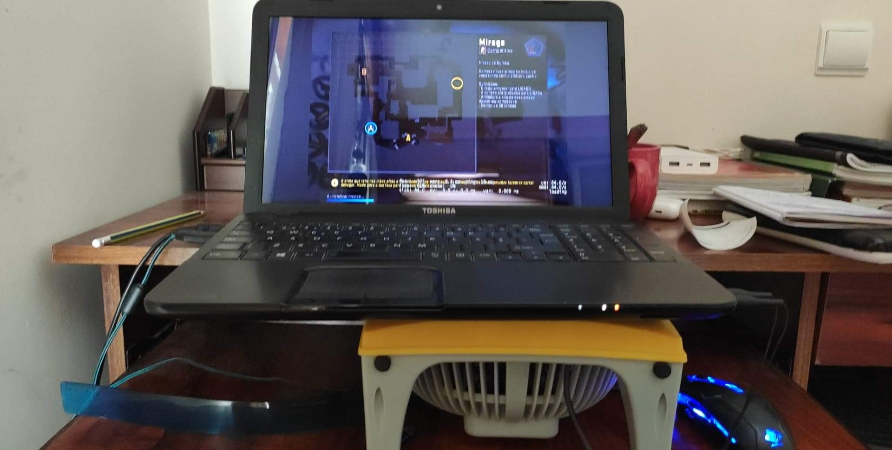O computador estava velho, e precisava mesmo de trocar para algo melhor, pedi à minha mãe, mas como os meus pais não sabiam o que eu passava nele nunca me iriam dar algo melhor.
Até que um dia a minha mãe precisou de fazer algo em um computador para o trabalho onde trabalha até hoje, no que ela me pediu ajuda e eu disse que ajudava, mal sabendo eu que aquilo foi a melhor coisa que me acontecera.
Enquanto eu escrevia o que ela me pedia para escrever em um documento Word, o computador não podia ter escolhido uma melhor hora para começar a travar por todos os lados e a dar erros dos quais eu nunca vira, aos quais me deparava e dizia à minha mãe "Vês é sempre isto, é para veres o que eu sofro". (Não me sinto mal pois eu realmente sofria com aquele computador.)
No dia 14 de Maio de 2020, recebi a MELHOR noticía da minha vida, ia mesmo ter o meu computador de sonho, tudo pelo qual esperei a minha vida toda estava mesmo a realizar-se, e eu não sabia como reagir, era a pessoa mais feliz do mundo, e continuo a ser todos os dias que olho para ele. Eu já sabia que peças queria para o meu computador, porque tinha passado o ultimo ano a ver peças para se um dia fosse ter um, o computador mudou completamente umas 3 vezes, ao decorrer desse ano, e podia ter sido outro qualquer se tivesse sido comprado em outra altura, mas ainda bem que demorou tanto tempo a vir, no meio desse tempo aprendi maior parte do que dá para saber sobre computadores, e consegui escolher o melhor computador para o que queria e o com os melhores preços.
Falei com o meu primo nesse mesmo dia, pois queria ajuda para montar o meu primeiro desktop (MEU), ele disse que me ajudava, mas as peças como vinham de tantos sítios diferentes, a ultima peça só chegou dia 3 de Junho de 2020, quase um mês a sofrer em plena quarentena à espera do meu computador.
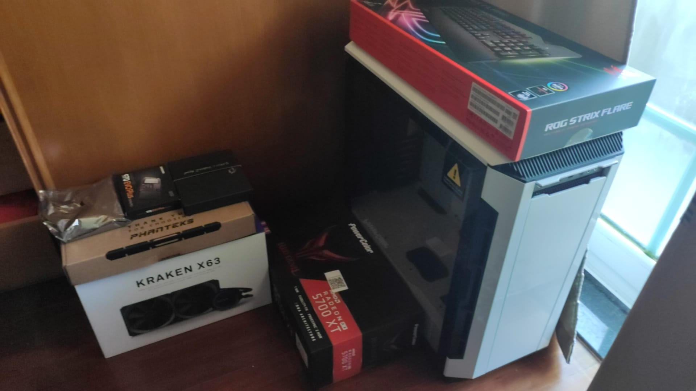 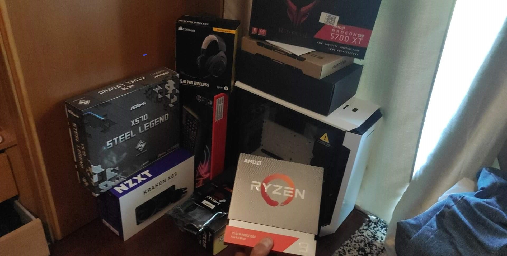No meio de tanta sorte ainda mais sorte tive, pois nesse tempo em que esperava pelas peças, registei-me em um site de apostas, que davam 8euros grátis para apostar como prémio de boas vindas, e no meio de tanta sorte ganhei 250euros com esses 8euros de oferta, 250 que foram desviados diretamente com mais alguns para comprar o meu monitor e o teclado.
Já tinha tudo, computador completo, monitor, teclado, tudo, mas cada passo que dava parecia menos, e ainda queria mais, no dia 20 de Outubro de 2020, no meu aniversário, peguei no dinheiro que tinha, com mais um pouco dos meus pais e comprei o meu segundo monitor. Cada peça nova do meu setup eu sentia um orgulho maior, no que tinha e no que estava a fazer.
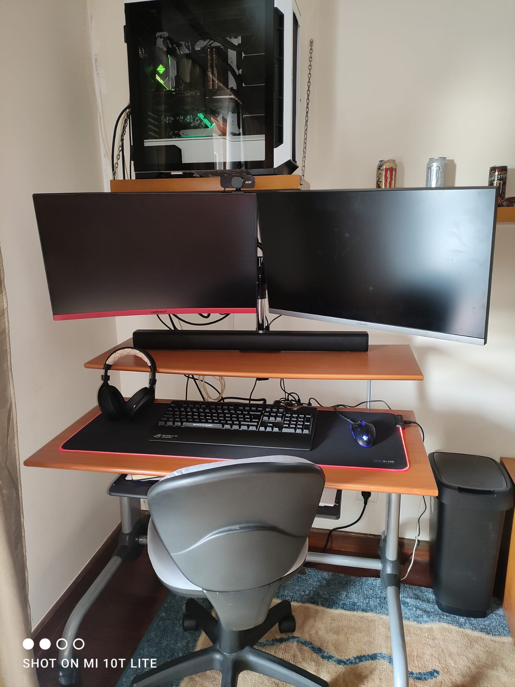CADA PEÇA, cada periférico, cada mínima coisa fui sempre eu que escolhi, com todo o conhecimento que vim ganhando nos últimos anos, e com o amor que ganhei desde sempre. Como tudo fui eu que escolhi, decidi então e porque não, desenhar a minha própria mesa.
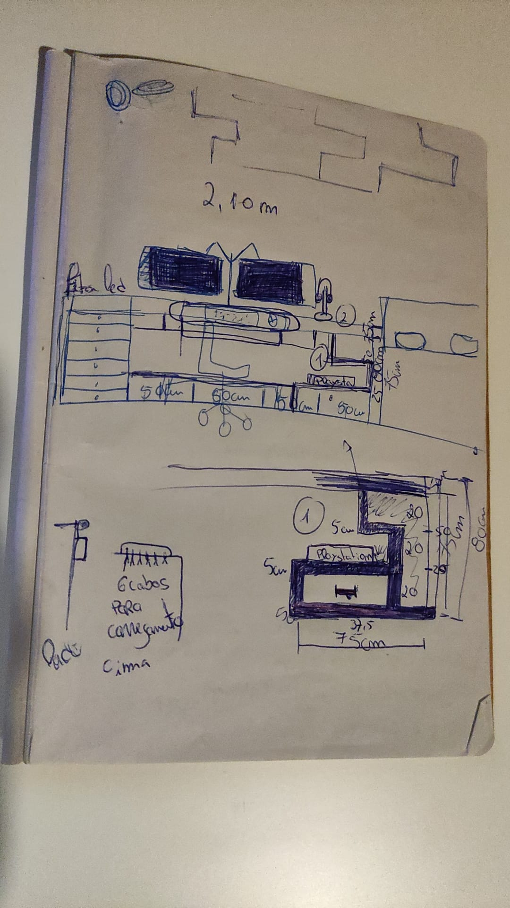 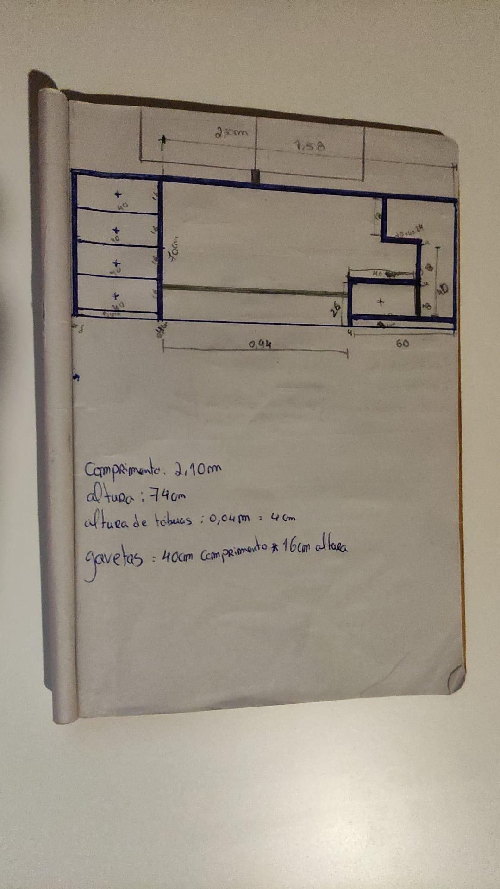Cada detalhe da mesa escolhido por mim,e desenhado à proporção da vida real no próprio papel. Uns meses se passaram e mostrei o desenho à minha mãe, ela gostou, até que decidimos pedir a um carpinteiro para me fazer a tal mesa. Demorou bastante tempo até a mesa estar pronta mas eu sabia que viria.
 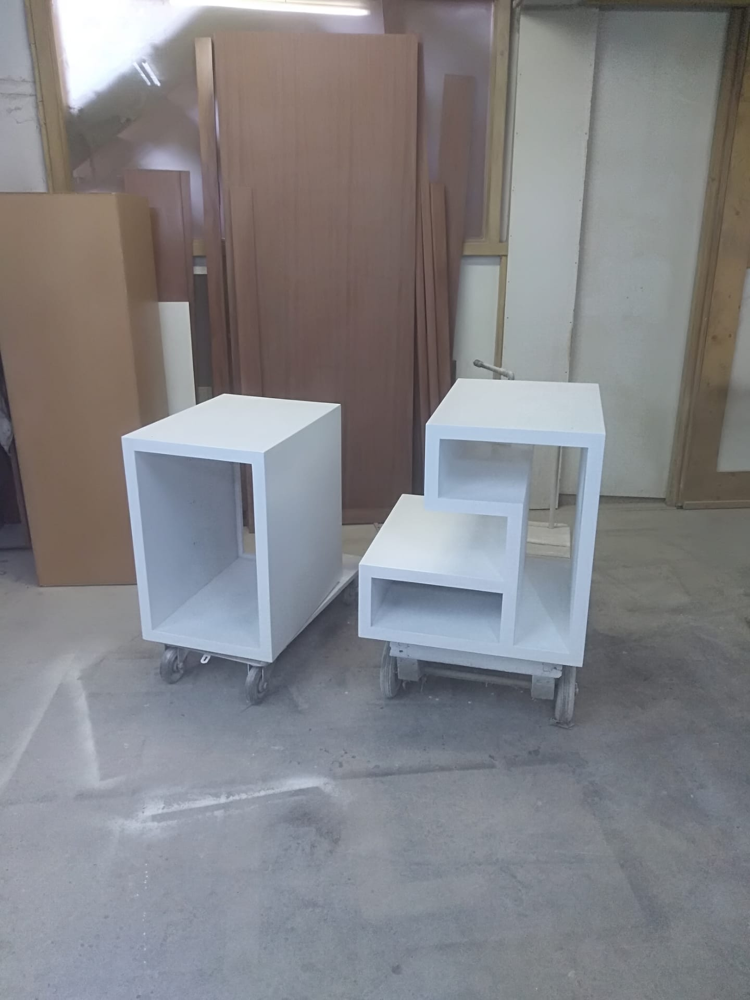
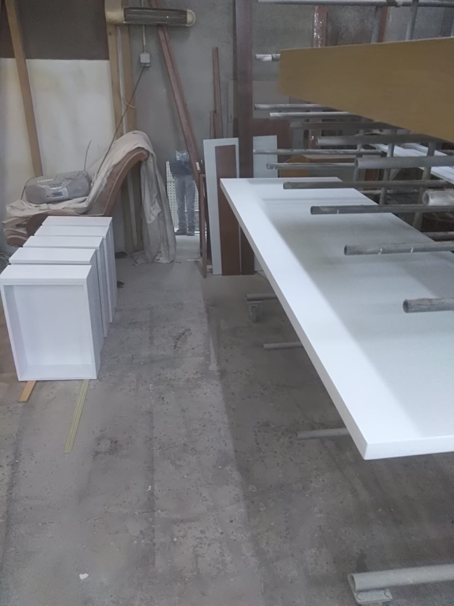
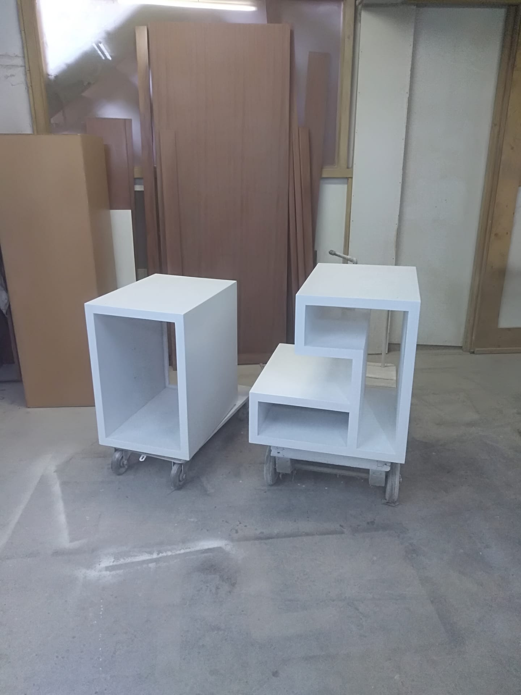
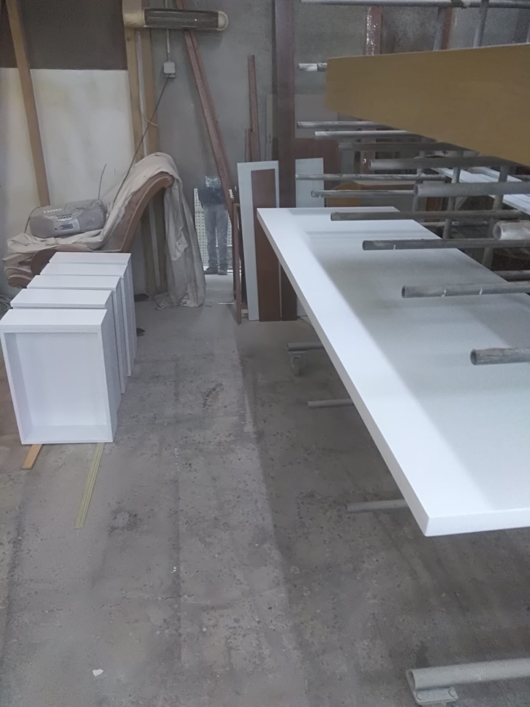
Até que no dia 10 de Abril de 2021 o carpinteiro tinha a mesa pronta e foi entrega a minha casa. Mais um passo para ter o meu setup de sonho estava completo.
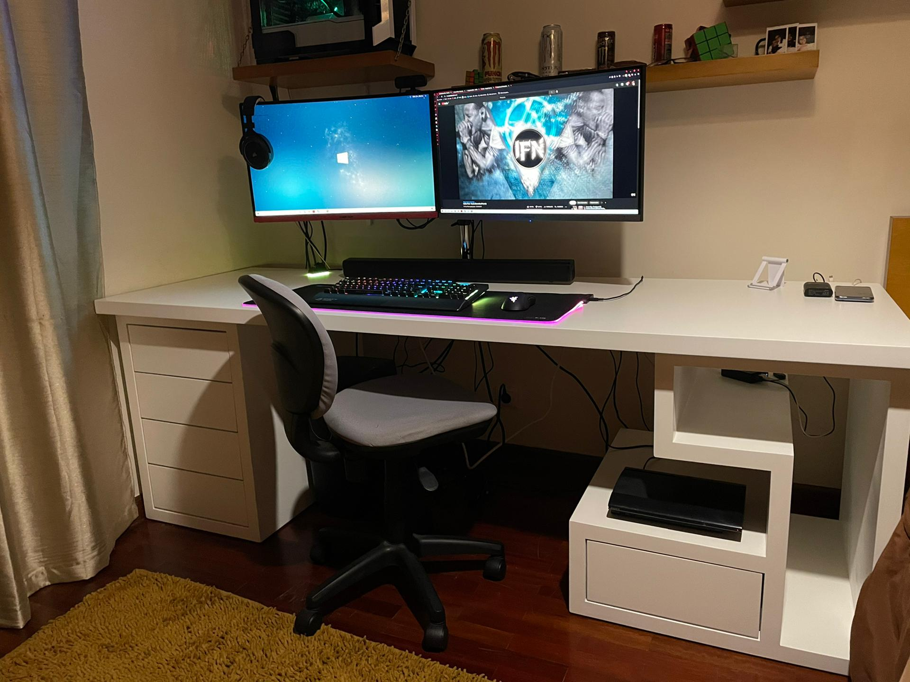 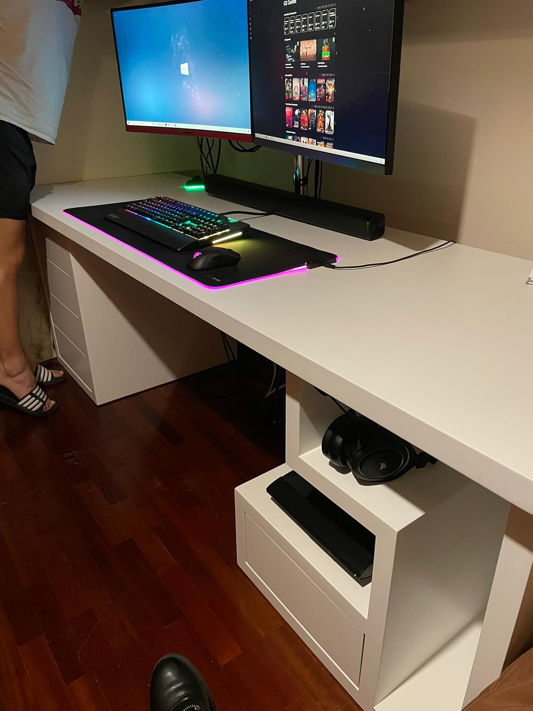 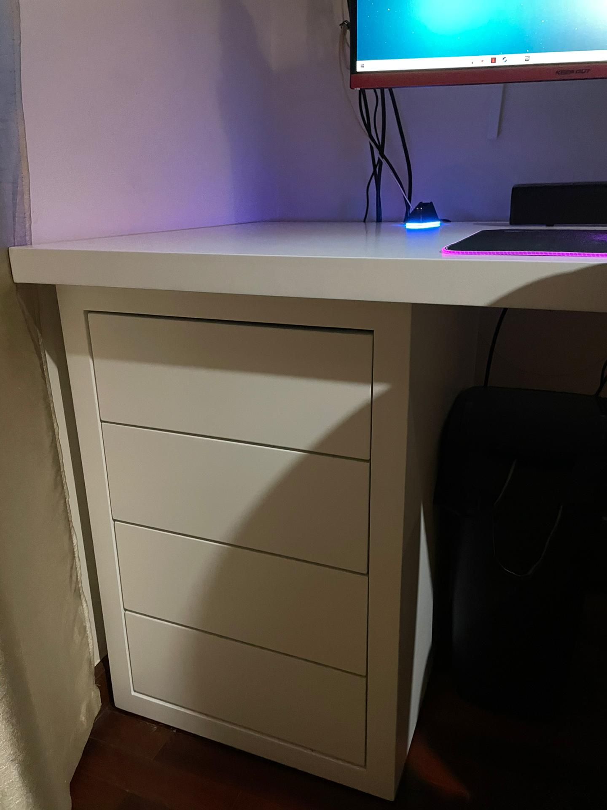 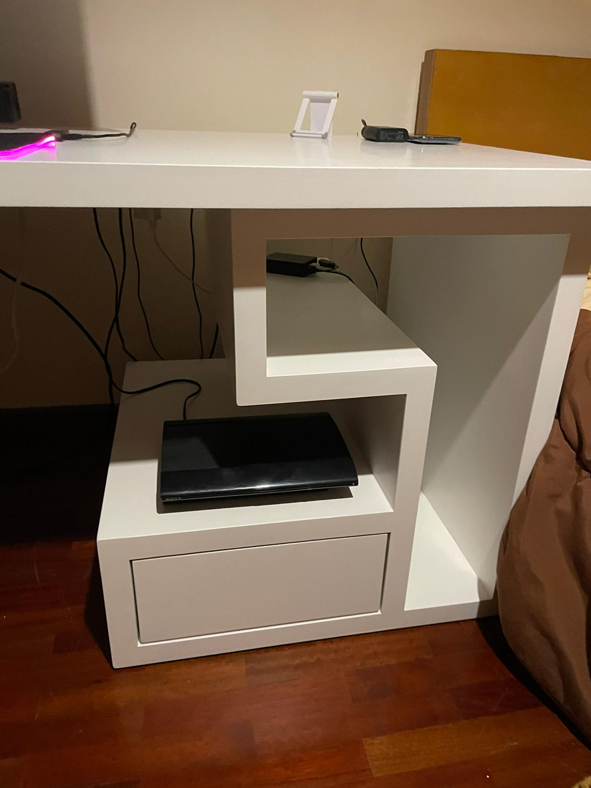 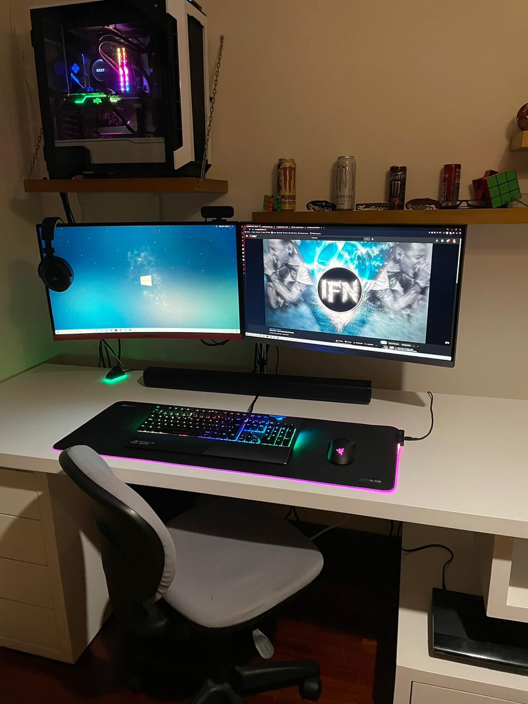E esta foi a minha história do meu amor secreto, não sou rico, estou longe de o ser mas tenho um amor por Tecnologia que é certamente GIGANTE, e muitas vezes prefiro gastar o meu dinheiro que ganho a trabalhar aqui do que em outro sítio, mas sei que isto nunca seria possível sem os meus pais, embora a parte do conhecimento,procurar e uma parte monetária tenha sido minha, os meus pais é que fizeram com que isto tudo fosse possível, e ser-lhes-ei eternamente grato. O meu sonho desde os meus 9 anos foi realizado aos meus 19, às vezes é preciso tempo para realizarmos os nossos sonhos, ou para que eles se concretizem, mas com esforço todos chegaremos lá, e tenho a certeza que não pararei aqui.
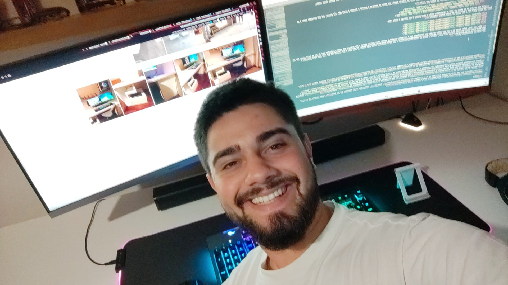*Eu feliz enquanto faço o trabalho de Ambientes Web.*